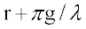

Makes the current medium chiral--one that exhibits isotropic optical activity
(circular birefringence).
Syntax
. . .[ ACTIVITY r [ g ] ]
| Option | Description |
|---|
| r | radians |
| g | difference between the right and left-handed refractive indices (see
Remarks) |
Remarks
-
For a wavelength w (in system units), the specific rotary
power in radians per unit length is,

- For r=0, g is just the
difference between the right and left-handed refractive indices. Currently, this is
assumed to be a purely volume phenomenon and therefore, its (usually small) effect
on direction splitting and the reflection/transmission coefficients at a surface are
ignored
ACTIVITY Examples